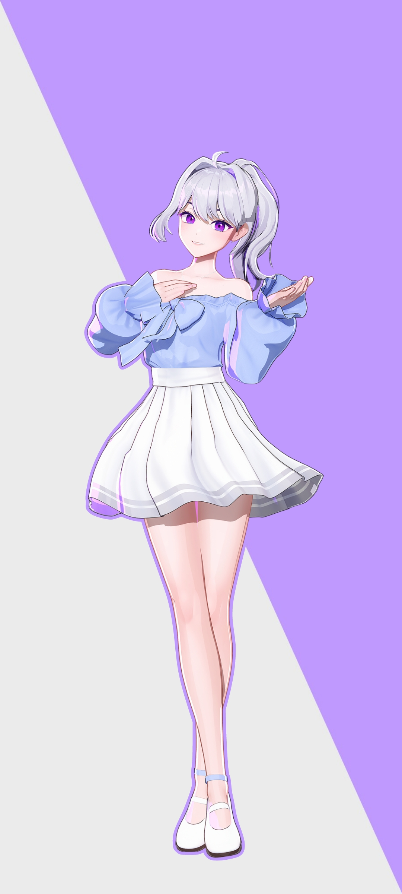
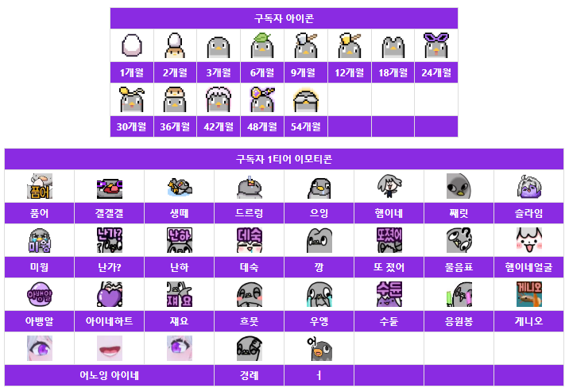

- 오디션 때부터 팬들은 물론이고, 합격 후 이세돌 멤버들도 입을 모아 릴파와 함께 메인보컬로 꼽을 정도로 노래 실력이 뛰어나다. 그룹 내에서 공식 포지션은 정해지지 않았지만 보통 노래 후렴구와 같은 하이라이트 파트와 화음, 코러스를 담당하는 등 비공식적으로도 그 역할을 하는 편.
- 허스키한 톤에 풍부한 성량과 넓은 음역대를 지니고 있으며, 특히 감정을 연기하는 데 있어 특출난 기교를 갖춘 훌륭한 보컬의 소유자이다. 소화할 수 있는 장르의 영역도 그만큼 넓다
- 아이네의 보컬로서의 큰 강점은 명료한 딕션과 뛰어난 완급조절 및 끝음처리를 통해 노래가 의도하는 감정을 그대로 담아 전달하는 표현력이다. 음 하나하나와 호흡까지도 섬세하게 계산된 의도를 담아 부르는 그녀의 노래는 청자에게 기교와 스킬의 차원을 뛰어넘은 매력으로 다가오며, 이는 아이네의 보컬이 많은 사람들에게 사랑을 받는 이유이기도 하다. 여기에 더해 마치 성대를 갈아끼워 넣는 것마냥 노래의 분위기에 따라 전혀 다른 창법과 음색으로 다양한 스타일의 장르들을 능숙하게 소화해 낸다.
- 음악을 사랑하는 부모님의 희망으로 어렸을 때부터 다양한 콩쿠르에 참여하면서 성악가를 장래 희망으로 삼았으며, 자신의 실력에 한계를 느껴 고등학생 때 즈음 꿈을 접었지만 이후 다시금 노래를 제대로 해보고 싶다는 희망이 생겨 실용음악을 공부했다고 한다.

흐으으으으음~ 하이네~~!!!!!!!!!!!
패러블 엔터테인먼트[운영] 소속 6인조 버츄얼 방송인 그룹 이세계아이돌의 멤버. 동시에 SOOP 스트리머이며, 버츄얼 유튜버이다.
패러블 엔터테인먼트[운영] 소속 6인조 버츄얼 방송인 그룹 이세계아이돌의 멤버. 동시에 SOOP 스트리머이며, 버츄얼 유튜버이다.
2021년
9월 9일 : 제 1회 구구의 날2023년
9월 9일 제 2회 구구의 날

방송규칙
(예외도 있긴하지만) 방장이 언급전에> 타스트리머 언급/방송주제와 상관없는 채팅/훈수/중계/비교/평가/시청자수언급/친목/네임드/도배/물타기/뇌절/개인정보 추측 외에도 방장 주관적인 상황에 따른 알잘딱 못하는 선넘는 행동 <
위와 같은 행동을 했을시 즉시 밴 혹은 채팅금지 / 경고 혹은 채팅금지를 3번 받을시 밴